BrainSINS Plugins and 3rd Party Integrations
First create your BrainSINS account
Before you start, you need to create a BrainSINS account, as in the installation process of our plugins, you'll be required a client token, that you can get after registering at BrainSINS. If you haven't a BrainSINS account, please check the Get Started section.
An overview
Integrating BrainSINS with your online store using our plugins is really simple. Actually we offer plugins for Prestashop and Magento, which can be installed in less than 5 minutes.We also offer integration guides for some other eCommerce platforms such as Shopify or SEOshop. Following the integration guides for those platforms, you can integrate BrainSINS with your online store in less than 30 minutes.
If you are not using any of those platforms (Magento, Prestashop, Shopify, SEOshop), you can integrate BrainSINS by means of our JavaScript integration, which will require a little more time, but it will not require more than a few hours of your time.
Installing our Prestashop Module
Installing our module for Prestashop is quite simple. You need to download our module and install it as any other Prestashop module. After the installation, you'll be required to introduce your client token and configure the recommendation strategies for your online store.
We have prepared a step-by-step installation and configuration guide for our Prestashop module. Choose your Prestashop version to access the specific guides:
Prestashop 1.5+
Step One
Go to the admin panel of your online store, and click in Modules -> Modules, so you can access to the page where you can manage your modules.

Step Two
Once in the modules page, you need to click the "Add a new module" button, located at the top-right of the screen.

Step Three
Now you have to choose what plugin to install. Select the ZIP file you have previously downloaded containing our module and click "Upload this module". If you haven't donwloaded our module yet, first download it from this link.

Step Four
At this point, the module has been uploaded to your online store, but it has not been installed. Find the BrainSINS module in your module's list and click "Install".

Step Five
The module is now installed, and Prestashop should redirect you to the next screen, showing the message "Module(s) installed successfully". At this screen you will also find the main configuration of our module. To make our module work, you need to introduce your client token in BrainSINS Key. You can find the BrainSINS Key accessing our management tool: Settings->Account info. This id has the following structure: BS-0000000000-1.
You should also enable the plugin, by clicking the radio button option that enables the plugin. And you also need to check your policy regarding to what users BrainSINS can send email communications on your behalf (such as cart abandonment emails, etc.). In most cases, the best option should be to choose "Users subscribed to newsletter", but it may depend on the configuration of your online store.
Don't forget to click the "Update settings" button after you have updated the basic configuration.

Step Six
After the configuration has been successfully saved, you need to go to our management console. The good news is that you can configure the position of the recommendations and the look&feel from our management console, no need to modify any other configuration in the plugin.
Prestashop 1.6+
Step One
Go to the admin panel of your online store, and click in Modules -> Modules, so you can access to the page where you can manage your modules.

Step Two
Once in the modules page, you need to click the "Add a new module" button, located at the top-right of the screen.

Step Three
Now you have to choose what plugin to install. Select the ZIP file you have previously downloaded containing our module and click "Upload this module". If you haven't donwloaded our module yet, first download it from this link.

Step Four
At this point, the module has been uploaded to your online store, but it has not been installed. Find the BrainSINS module in your module's list and click "Install".

Step Five
The module is now installed, and Prestashop should redirect you to the next screen, showing the message "Module(s) installed successfully". At this screen you will also find the main configuration of our module. To make our module work, you need to introduce your client token in BrainSINS Key. You can find the BrainSINS Key accessing our management tool: Settings->Account info. This id has the following structure: BS-0000000000-1.
You should also enable the plugin, by clicking the radio button option that enables the plugin. And you also need to check your policy regarding to what users BrainSINS can send email communications on your behalf (such as cart abandonment emails, etc.). In most cases, the best option should be to choose "Users subscribed to newsletter", but it may depend on the configuration of your online store.
Don't forget to click the "Update settings" button after you have updated the basic configuration.

Step Six
After the configuration has been successfully saved, you need to go to our management console. The good news is that you can configure the position of the recommendations and the look&feel from our management console, no need to modify any other configuration in the plugin.
Magento
Installing our extension for Magento is quite simple. You need to download our extension and install it as any other Magento extension. After the installation, you'll be required to introduce your client token and configure the recommendation strategies for your online store.
We have prepared a step-by-step installation and configuration guide for our Magento extension.
Installation and Configuration Guide for Magento
Step One: Install our Extension
Go to the admin panel of your online store, and follow the next path System > Magento Connect > Magento Connect Manager.
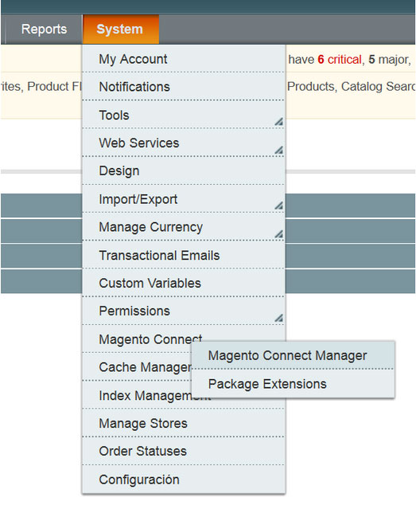Once in that screen, you need to upload our extension as a Direct package file upload. In order to be able to upload our plugin, you need to download it first. You can get the latest BrainSINS extension for Magento in the following link: http://clients.cdn.brainsins.com/magento/Brainsins_Recommender-2.0.5.tgz.
Once you have downloaded our extension to your computer, you need to click on Browse (Examinar in Spanish) and choose the path to the extension in your computer. After you have selected the tgz file containing our extension, you should click on the "Upload" button.
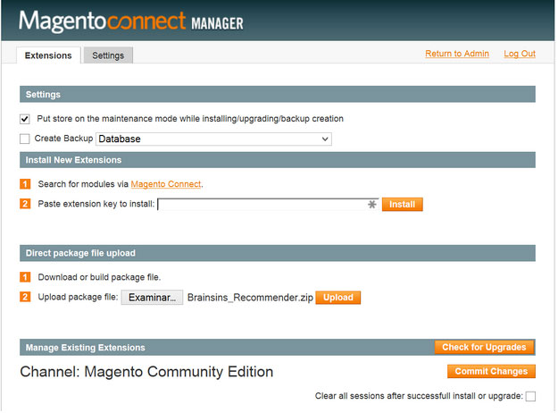You also can install it downloading the .zip file of the extension and copying its content in your hosting magento folders (do not overwrite the already existing folders). http://clients.cdn.brainsins.com/magento/Brainsins_Recommender.zip
Now you should logout and login in your Magento Admin panel. If you don't do that, it's possible that you get a 404 error when trying to access our extension.
Step Two: General Configuration
Now it's time to configure our extension. Go to System and then in the left menu go to BrainSINS->Configuration.
In that screen you'll be required to introduce certain configuration values:
- Enable: You should choose "Yes" to activate the extension.
- BS-KEY: You should include your client unique token. You can find this information accessing our management tool: Settings->Account info.
- Customer email tracking: If you want to track the user emails in order to use them in our email retargeting service. We recommend to mark it as "Yes" so everything will be ok at any time for you to activate our email retargeting service.
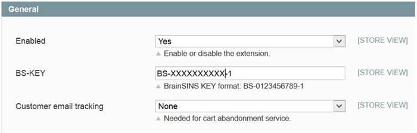
Step Three: Configuration of the Advanced Options
In this section, you should not modify any of the preconfigured values unless you are instructed to do so. Next we explain each of those values just so you can understand what you are doing if you need to modify them:
- Select “B” option in advanced configuration parameter “BrainSINS API Mode”. You only need to select the value "A" if BrainSINS requires you to do so. This parameter controls the BrainSINS' API endpoint you will be using.
- Active the "custom tracking script" if you have instructions from BrainSINS to do it. This option allows the inclusion of a custom-made javascript file from our CDN to include additional features if needed.
- If the shop use any kind of cache like Redis, Memcached, Varnish, etc, Activate "use Ajax for tracking generation".
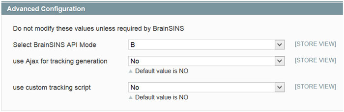
Step Four: Include Recommendations in your Online Store
In this section you are allowed to include recommendations blocks within the different pages of your online store.
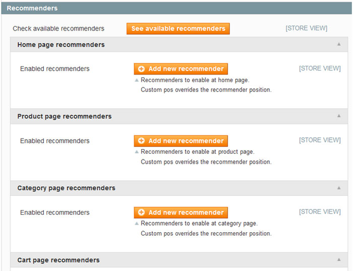For each page you can insert recommenders clicking on the button “Add new recommender”. You will be require to add the following information per each recommendations block:

- Custom pos: This option allows you to choose the exact position where the recommendations will be shown in your webpage. You are required to introduce two values. The second value is a reference to a structural element of your webpage (the id or class of a certain DIV or any other HTML element). Tho choose the element of reference to position the recommendations you can make use of CSS notation: “#” for id and “.” for classes. So, with the second field you choose an HTML of reference within a certain page, and with the first field you can choose if you want to replace that HTML element with the recommendations (option "replace"), or if you want to position: "before" or "after" that block, or if you want to position the recommendations as the "first" or "last" element within the reference. You also can remove the recommender with a click on “Delete”.
- Recommender id: here you should indicate the number of the recommender that you want to use. Depends of your choice it will change the recommender behaviour. Following the list of behaviours you can use:
- Home page
- 1 Related products you've watched
- 2 Based on your browsing history
- 3 Top sellers
- 4 More products undiscovered
- 5 Recomendaciones de nuevos productos
- Product page
- 6 Customers who bought this product also purchased
- 7 Recently Viewed Products
- 8 Frequently purchased together
- 9 Products in similar categories
- 10 Users who have visited the product at end bought
- 22 Based on your browsing history
- Cart
- 11 Customers who bought products that appear in your shopping cart also bought/li>
- 12 Products that are purchased with the last added to cart
- Checkout
- 13 Frequently purchased together/li>
- 14 Recently Viewed Products
- Home page
NOTE: The button "see available recommenders" leads to list of recommenders in our management console.
NOTE 2: The list of recommendations algorithms available is much larger, we have only listed the recommender algorithms preferred by most of our customers. If you desire any other recommendation algorithm, please contact our support team at mailto:support@brainsins.com
Step Five: Configure our Product's Feed Generator
BrainSINS requires the use of a product's feed, so we can update the information about your products once or several times per day. To make it easier for you, our extension includes a Product's Feed Generator, that can be customized to export the data you consider more relevant for the recommendations. The parameters you can configure are:
- Include out of stock products: If you include out of stock products in the product's feed, those products can be shown in the recommendations.
- Prices with taxes included: Usually this option has to be "Yes" so the prices shown in the recommendations are the prices including taxes. If you prefer to show the prices without taxes, mark it as "No"
- Special price instead of normal: Choose "Yes" if you prefer to show prices that include discounts, choose "No" otherwise.
- Product description attribute: In most cases you don't need to change the configuration of this field. But if you are required to do so, you should select the attribute you desire to use as description in the feed.
- Custom image width / Custom image height: In order to show the product's images in the recommendations we usually include the images associated to your products in your Magento store. Those images tend to be really big, so in order to optimize the load of the recommendations, we recommend you to choose the width and height of the images that will be used to showcase your products in the recommendations.
Step Six: Configure the Autologin Option (if needed)
This feature allows that the users that are receiving our emails for recovering ther shopping carts can log-in automatically into your online store when clicking the "Complete purchase" button of the shopping cart recovery emails.
In order to configure this feature, you need to enable it by choosing "Yes" in the "Enabled" option and then include a Secret KEY with a value of your choice (a randomly generated set of characters and numbers should be ok). After that, you should include the same value in the "Secret key" option of our email designer within our management console
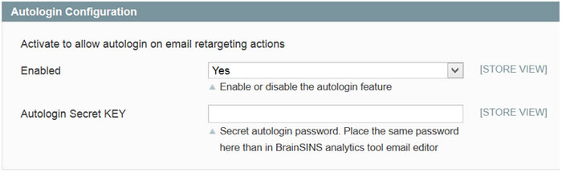Step Seven: Test & Set-Up the Product's Feed
If our extension has been able to generate your online store's product feed, you will be able to access the feed in real time using the following URL: http://catalog.brainsins.com/magento-loader.php?url=http://www.myshop.com. Note that "http://www.myshop.com" is the URL of your online store. Also note that the process of generating a product's feed may take up to several minutes.
After you have checked that our extension is able to generate the product's feed of your online store, you need to access our management console and set-up the URL of the feed, so we can load automatically your product's feed. You need to follow the next steps:
- 1.- Access our management console
- 2.- In the "Optimization" section you will find the sub-section “Upload catalogue”. Click on that sub-section.
- 3.- Click on advanced options to unlock the URL and automatic upload fields.
- 4.- Fill the URL field with http://catalog.brainsins.com/magento-loader.php?url=http://www.mystore.com. Remember that "http://www.mystore.com" should be substituted by the URL of your online store.
- 5.- You also can manage the frequency and the time intervals of the next automatic uploads.
- 6.- Finally, click on the green button “Reload Catalogue”.
If the upload was correct you could see the URL with the date and “ok”.
Step Eight: Edit the Look&Feel of the Recommendations
Just when you add a new recommendation block in your online store, the recommendations will show a basic look & feel, that in most cases wouldn't fit your online store's design. You can modify the look&feel of the recommendations by accessing our management console and then following the next path: Optimization > Recommenders > List.
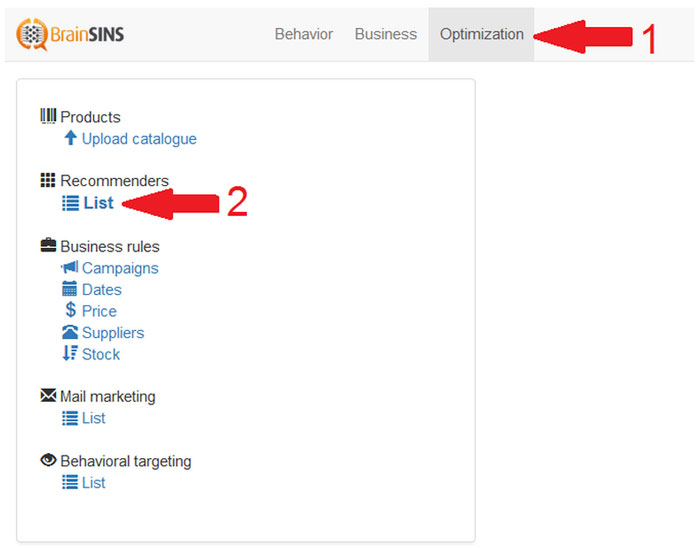In that screen you will see a list of the recommender available for your online store. You can modify the look&feel of any of the recommenders by choosing the "Edit style" button next to each recommender:
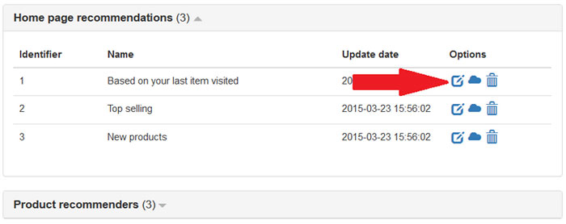Once in the editor, you could see some options to change the colors, sizes, etc. An example of a default configuration:
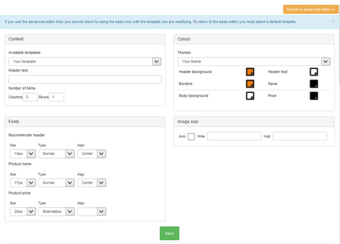The basic editor allows you to modify certain basic aspects of the look&feel of the recommendations in an easy way. You can also modify the look&feel of the recommendations in any possible way if you have some knowledge of HTML and CSS. Click on the orange button “Swich to advanced editor” to start working.
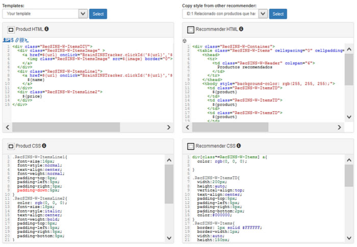Once in you will see four sections:
- Product HTML: your HTML of each product of the recommender will be here. You also can use the variables ${name}, ${id}, ${price}, ${url}, ${image} and an onclick function to return something when click.
- Recommender HTML: HTML of the recommenders container. Each product that you want to show will be invoked by the variable "${product}". It says to the system that it have to reproduce the code in “Product HTML”.
- Product CSS: your CSS associate to each product.
- Recommender CSS: CSS associate to "Recommender HTML".
You should also configure the currency format according to each tracking code that you are using in your shop. Contact with support team of BrainSINS in http://support.brainsins.com if you don’t know clrearly what tracking code are you using or should use in your shop.
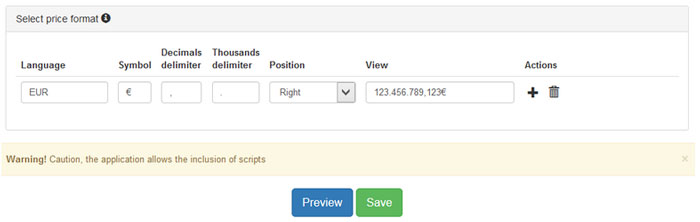